地政学
ヴァレッタは地中海中央部の小国首都です。欧州、北アフリカ、中東の航路が近く、EU加盟国として移民、海上安全、観光、税制、外交を調整します。小さな半島が広い海の政治を受け止める街です。今も広い海の要です。
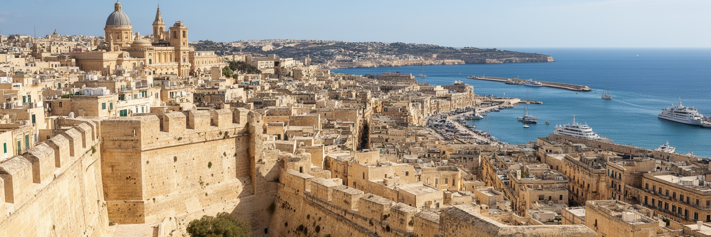
🇲🇹 マルタ / 地中海 / World City Atlas
半島の城壁都市は、聖ヨハネ騎士団、カトリックの信仰、英領期の軍港、EU加盟国の行政、クルーズ観光、住民の細い路地を一つの石の都市に重ねています。
都市の骨格
ヴァレッタはグランド・ハーバーとマルサムシェット港に挟まれた小さな半島の上にあります。面積はごく小さい一方、官庁、聖堂、劇場、博物館、商店、住居、フェリー、クルーズ客の動線が凝縮しています。
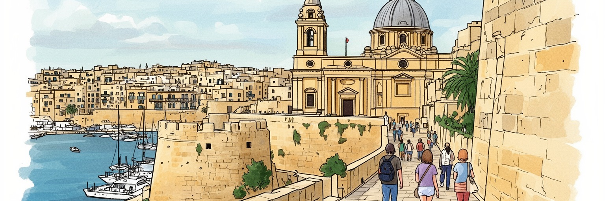
ヴァレッタは地中海中央部の小国首都です。欧州、北アフリカ、中東の航路が近く、EU加盟国として移民、海上安全、観光、税制、外交を調整します。小さな半島が広い海の政治を受け止める街です。今も広い海の要です。
行政、港湾、観光、文化財管理、飲食、ホテル、フェリー、クルーズ、金融サービスが雇用を作ります。昼は通勤者と旅行者で膨らみ、夜は住民の少なさも見えます。働く街と住む街の差が都市課題です。家賃も重いです。
聖ヨハネ騎士団の記憶、カトリックの祭礼、マルタ語と英語、劇場、バロック美術、港町の食文化が重なります。教会の鐘、細いバルコニー、騎士団の宮殿が、信仰と国家の物語を日常に残します。今も路地に響きます。
旅行者は聖堂、城壁、港の眺望、博物館へ向かいますが、住民には住宅改修、観光騒音、坂道、高齢化、生活用品店の不足、夏の暑さが切実です。世界遺産は生活の場でもあります。暮らしを守る工夫が今も必要です。
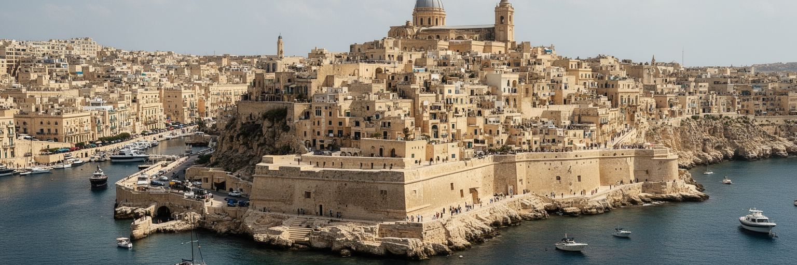
ヴァレッタの都市形態は、地中海の小さな半島を軍事と行政の装置へ変えた歴史から生まれました。東にグランド・ハーバー、西にマルサムシェット港を見下ろす高台は、船の接近を監視し、砲台で守り、騎士団の支配を可視化する場所でした。街路は格子状に引かれますが、実際に歩くと坂と階段が多く、直線の計画と岩盤の起伏が重なります。城門から聖エルモ砦へ向かう軸、宮殿、聖堂、病院、宿舎、庭園は、宗教軍事都市としての秩序を今も感じさせます。世界遺産の中心部はわずか五十五ヘクタールほどですが、そこに多数の記念物が密集し、石灰岩の壁、木製バルコニー、教会の丸屋根、砦の稜線が連続します。要塞は過去の防衛施設であるだけでなく、現在の眺望、歩行ルート、観光の集中、修復費、バリアフリーの難しさを決めています。ヴァレッタを読むには、城壁を背景として眺めるだけでなく、海峡、港、砲台、坂道が政治と生活をどう形づくったかを見る必要があります。小さな市域だからこそ、港の風景と住民の玄関、国家の儀礼と日用品の買い物が近い距離にあります。石の都市は強固に見えますが、潮風、老朽化、観光圧、気候リスクに常にさらされています。守るべきものは記念碑だけではなく、要塞の中で続く日常の通路です。門をくぐる人の歩幅まで、都市計画の歴史を伝えています。
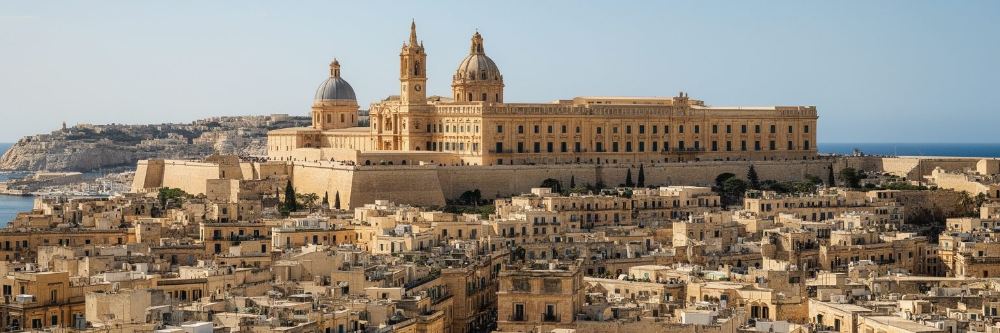
ヴァレッタは、聖ヨハネ騎士団の都市として建設されたことに強い個性があります。十六世紀の大包囲戦の後、騎士団は港を守る新首都を築き、宗教、軍事、医療、外交を一体化した都市空間を作りました。聖ヨハネ准司教座聖堂、騎士団長の宮殿、各出身言語別の宿舎、病院、砦は、戦う修道会であった騎士団の世界観を石に刻んでいます。ここでは信仰と権力が分かれず、慈善医療と軍事防衛も同じ制度の中にありました。現在の観光客はバロックの装飾やカラヴァッジョの絵画に目を奪われますが、その美は地中海での対立、航路の支配、キリスト教世界の境界意識とも結びついています。騎士団の記憶はマルタの国民的な物語に組み込まれ、独立国家の首都としてのヴァレッタにも深く残ります。一方で、歴史を英雄譚だけで語ると、包囲戦、奴隷労働、海賊行為、宗教的排除、植民地的な視線を見落とします。都市を丁寧に読むには、壮麗な聖堂や宮殿の背後に、誰が守られ、誰が外側に置かれたのかを考える必要があります。騎士団の都市は、ヨーロッパと地中海の接点で生まれた複雑な権力の記録です。その記録が、現在は博物館、国会、教会、街路、観光産業として使われ続けています。石の紋章は過去を飾るだけでなく、今日の国家がどの記憶を選び直すかを問い続けます。観光の視線も、その選択を毎日更新します。
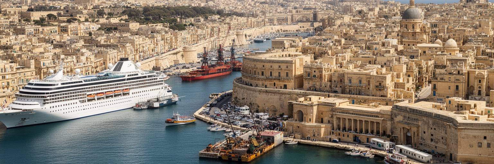
ヴァレッタの力は、陸の面積より港の奥行きにあります。グランド・ハーバーは騎士団、英海軍、商船、造船、フェリー、クルーズ観光を受け入れてきた天然の深い港で、対岸の三都市や造船地区とともにマルタの都市圏を形づくります。旧市街の人口は少ないですが、港を含む日中の活動圏は広く、通勤者、観光客、港湾労働者、船員、警備、清掃、飲食、ガイドが絶えず出入りします。海上交通は美しい眺望であると同時に、騒音、大気汚染、廃棄物、混雑、観光依存をもたらします。大型クルーズ船が入る日は、狭い街路に短時間の人流が集中し、店舗は潤う一方で住民の移動や静けさが損なわれることもあります。フェリーや小型船は、坂の多い市街地と対岸の地区を結ぶ生活インフラでもあります。ヴァレッタを港町として読む時、船を背景にした絵葉書だけでは足りません。港は軍事の記憶、帝国の物流、地中海の移民、観光経済、環境政策、働く人の安全を同時に抱えます。海を向いた首都は、外から来る資本や人に開かれるほど、狭い街の受け止める力を問われます。岸壁の改修、陸上電源、歩行者動線、対岸との公共交通は、観光の快適さだけでなく住民の健康にも関わります。港の美しさは、海と都市の負担をどう分かち合うかによって保たれます。朝のフェリーの混雑は、港が景観である前に生活の道であることを教えます。
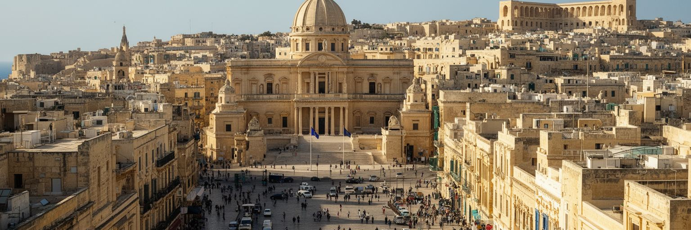
ヴァレッタは人口規模だけで見れば非常に小さな首都ですが、国家政治の重さは大きいです。マルタはEU加盟国であり、ユーロ圏の一員であり、地中海中央部に位置する島国です。首都の官庁や議会では、観光、移民、海上救助、税制、金融監督、港湾、文化財、住宅、気候適応、対外関係が扱われます。北アフリカに近い位置は、エネルギー、難民、海上境界、安全保障、言語文化の接点としての役割を生みます。英語とマルタ語を使う行政環境は、国際企業や教育、外交に開かれた利点である一方、外部資本への依存や社会の分断も招きます。小国では政治家、企業、教会、市民団体、メディアの距離が近く、透明性や腐敗防止、司法の独立、報道の自由が都市の日常的な課題になります。ヴァレッタの広場や裁判所前は、観光客が通る場所であると同時に、抗議、追悼、選挙、国家儀礼の舞台です。小さな首都の政治は、巨大な官庁街ではなく、歩いて数分の範囲に凝縮されます。だから決定の影響も見えやすく、港の開発、短期賃貸、文化施設、道路規制がすぐ住民の生活に触れます。ヴァレッタを読むことは、EUの中の小国が主権をどう使い、地中海の現実をどう政策に変えるかを読むことでもあります。石の街路は静かでも、その上を通る政治課題は広い海へつながっています。小さな広場の議論が、島全体の進路を決めることもあります。
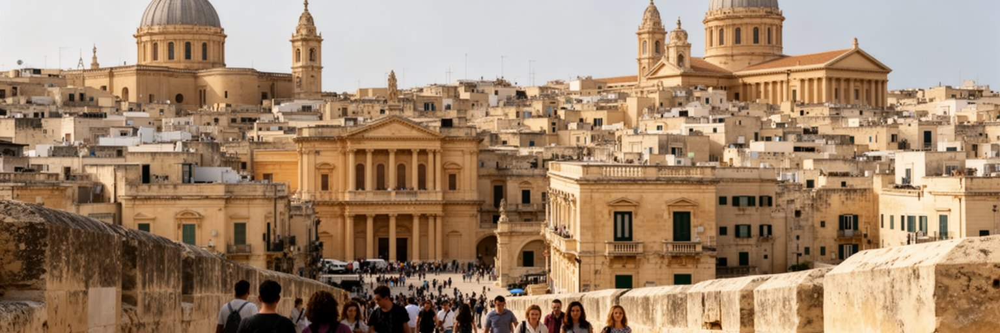
ヴァレッタは都市全体が観光の舞台になりやすい場所です。城門を入ると共和国通り、聖ヨハネ准司教座聖堂、騎士団長の宮殿、マノエル劇場、アッパー・バラッカ・ガーデンズ、聖エルモ砦、博物館、海を望む城壁が短い距離に並びます。世界遺産としての価値は、単一の建物ではなく、十六世紀以降の計画都市がほぼ全体として残り、港と要塞と宗教施設が一体で読める点にあります。観光は修復費、雇用、飲食、ガイド、文化施設を支えますが、同時に生活の場を消費空間へ変える力も持ちます。短期滞在者向けの宿泊、土産物店、夜の飲食、クルーズ客の集中は、住民の買い物、騒音、家賃、公共空間の使い方に影響します。世界遺産の都市で大切なのは、石を保存することだけではありません。住民が階段を上り下りし、子どもが学校へ通い、高齢者が近所で用事を済ませ、教会や市場や小さな店が続くことです。ヴァレッタの観光は、歩いて歴史を読む豊かさを持つ一方、過剰になれば都市を展示室にしてしまいます。文化財の修復、来訪者管理、地元向け店舗、公共住宅、交通規制を組み合わせて初めて、観光と暮らしは両立します。訪れる人にとっても、住民の生活が残る街は記憶が深くなります。扉の奥の暮らし、教会の鐘、港へ抜ける風があるから、世界遺産は生きた都市として響きます。朝の市場も、その実感を支えます。
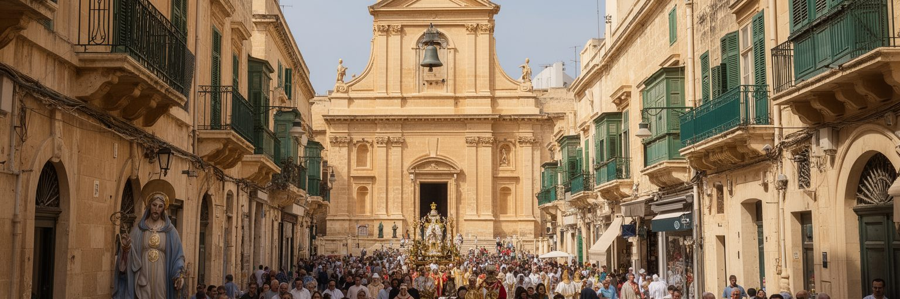
ヴァレッタの文化を理解するには、カトリックの信仰と祭礼を都市の中心に置く必要があります。聖ヨハネ准司教座聖堂は騎士団の権威を象徴する壮麗な空間ですが、街には他にも多くの教会、礼拝堂、聖人像があり、鐘の音や祝日の行列が日常の時間を刻みます。マルタでは教区ごとのフェスタが強い地域意識を作り、音楽、花火、旗、屋台、家族の集まりが夏の街路を変えます。ヴァレッタの信仰は観光客に見せる装飾ではなく、住民の記憶、死者の追悼、結婚、洗礼、慈善、近所づきあいに関わる生活の制度です。一方で都市には世俗的な文化、移住者、英語で働く国際人材、観光産業も増え、信仰の公共性は変化しています。教会が社会福祉や教育、文化財保存で果たす役割は大きいですが、政治や価値観をめぐる議論も避けられません。ヴァレッタでは、騎士団以来の宗教的な象徴が国家の物語と結びつきやすく、誰がその物語に含まれるのかを問い続けます。祭礼の賑わいは街を活気づける一方、騒音や混雑も伴います。信仰を都市文化として読むには、聖堂の豪華さだけでなく、路地で準備する人、教会を支える高齢者、音楽隊、移住者の参加、静かな祈りにも目を向ける必要があります。宗教は過去の遺産ではなく、変わり続ける共同体の言葉として街に残っています。鐘の音は観光の演出ではなく、近所の時間を知らせる合図でもあります。
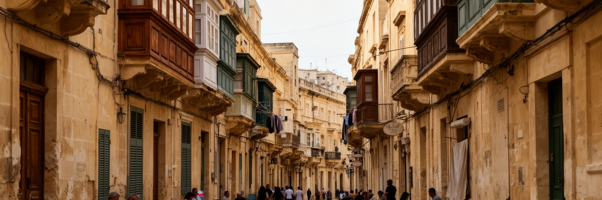
ヴァレッタは首都でありながら、居住人口は非常に少ないです。昼間は官庁職員、学生、観光客、クルーズ客、飲食店の働き手で混みますが、夜になると通りの性格は大きく変わります。歴史的建物は美しい反面、改修費、湿気、階段、狭さ、断熱、バリアフリー、防火、駐車、生活用品店の不足が住み続ける難しさを生みます。短期賃貸や観光向け宿泊が増えると、住宅は投資対象になり、若い世帯や低所得の住民は中心部に残りにくくなります。空き家を修復して活用することは重要ですが、それが住民向けではなく観光だけに向かえば、街は生活の厚みを失います。ヴァレッタの住宅問題は、大都市の郊外化とは違い、世界遺産の中で暮らすための費用と規制が大きな重みを持つ点にあります。石造りの建物を現代の住まいへ変えるには、文化財保護、家賃、公共補助、職人技、エネルギー効率、近隣の静けさを同時に考える必要があります。住民が少なくなると、学校、商店、地域活動、夜の安全、教区の祭礼も弱くなります。観光地としての成功が、首都としての居住性を削るなら、都市の魅力は長期的に痩せます。ヴァレッタを生きた街に保つには、訪れる人の数だけでなく、毎朝窓を開け、洗濯物を干し、近所で挨拶する人の存在を守る政策が欠かせません。住む人こそ、文化財を日常へつなぐ最も確かな担い手です。
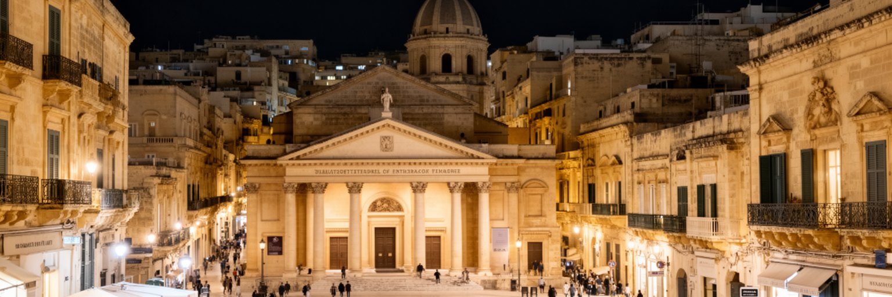
ヴァレッタは小さな市域に多くの文化施設を抱えています。マノエル劇場、国立考古学博物館、現代美術や建築の施設、聖堂、宮殿、図書館、フェスティバル、路上の音楽や飲食店が、バロック都市の中に現代の創造性を流し込みます。欧州文化首都を経験したことで、公共空間、文化事業、修復、イベント、国際交流への意識も高まりました。文化は観光資源であると同時に、住民が都市を自分の場所として使うための手段です。劇場に行く、展示を見る、広場で演奏を聴く、古い建物を新しい用途で使うことは、世界遺産を過去に固定しない力になります。ただし文化政策がイベント中心になると、短期的な集客ばかりが目立ち、地元の芸術家、若者、移住者、低所得の住民が参加しにくくなる危険もあります。ヴァレッタの文化の厚みは、騎士団や英領期の記憶だけでなく、マルタ語と英語を行き来する作家、映画、音楽、デザイン、飲食、フェリーで通う学生、港湾地区の再生にも広がります。古い石の街で新しい表現を育てるには、手頃な制作場所、夜間の騒音管理、公共交通、教育、文化財との対話が必要です。観光客に消費される文化ではなく、住民が関わる文化であるほど、都市は単なる保存地区を超えます。ヴァレッタの小ささは、異なる分野の人が同じ広場で出会える強みでもあります。創造性は、歴史の重さを軽くするのではなく、現在へつなぎ直します。
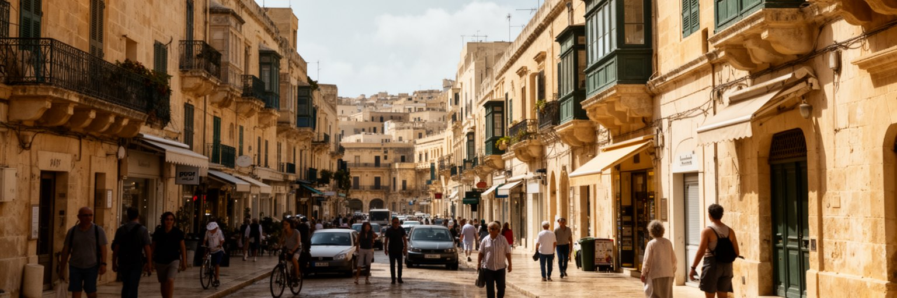
ヴァレッタの気候は地中海性で、夏は乾いて暑く、冬に雨が多くなります。海風は街を冷ます一方、石造りの街路、日陰の少ない広場、観光客の多い昼間、古い住宅の断熱不足は、熱波の負担を大きくします。マルタは水資源が限られた島国であり、海水淡水化、地下水、貯水、雨水管理、節水が生活と観光を支えます。ヴァレッタの歴史的建物には雨水利用や厚い石壁の知恵が残りますが、現代の空調、宿泊施設、飲食、クルーズ観光はエネルギーと水の需要を増やします。豪雨が短時間に降れば、狭い坂道や階段は水の通り道になり、石材の劣化や港への流出も問題になります。気候変動は海面上昇だけでなく、熱、乾燥、突然の雨、観光シーズンの変化として都市に現れます。文化財の保存も気候適応と切り離せません。潮風、湿気、塩分、強い日射は、壁面、木製バルコニー、絵画、教会の内装に影響します。ヴァレッタが持続するには、日陰、植栽、涼める公共空間、建物改修、徒歩とフェリーの快適化、港の排出削減を組み合わせる必要があります。美しい石の街を守ることは、過去を保存するだけではなく、暑さの中で働く人、歩く人、住む人を守ることでもあります。小さな首都だからこそ、一本の街路の日陰や一つの水場が、都市のやさしさを具体的に示します。乾いた夏の午後には、その差が体で分かります。
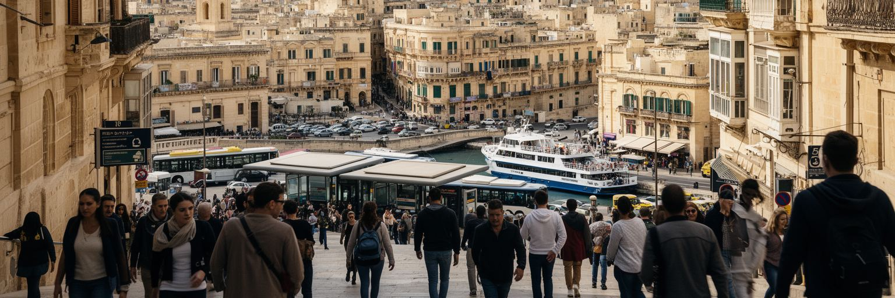
ヴァレッタの移動は、距離の短さと高低差の大きさが同居します。旧市街の中は歩いて回れますが、坂道、階段、石畳、夏の暑さは移動を楽にしません。城門近くのバスターミナルはマルタ島各地からの通勤と観光の玄関で、フェリーはスリーマや三都市と首都を結びます。自動車は狭い街路に入りにくく、駐車も限られるため、歩行者空間の質、公共交通の乗り継ぎ、港へ下りるルートが生活の使いやすさを左右します。観光客が多い時間帯には、写真を撮る人、配達、清掃、飲食店の仕込み、通勤者、高齢者、ベビーカーが同じ路地を使います。都市が小さいほど、歩道の段差や日陰の有無が大きな差になります。ヴァレッタの交通政策は、観光客を中心部へ運ぶだけではなく、住民が病院、学校、買い物、役所へ無理なく行けることを基準に考える必要があります。フェリーや電動小型交通、エレベーター、バスの頻度、夜間の安全、荷さばきの時間管理は、世界遺産の景観と生活を両立させる実務です。港と高台の間をどう結ぶかは、要塞都市の古い課題であり、今は高齢化と観光集中の課題でもあります。歩いて楽しい街であるためには、歩ける人だけに優しい街で終わってはいけません。短い距離を誰が、どの季節に、どの荷物を持って移動するのかを考えることで、ヴァレッタの日常は見えてきます。坂の上り下りも都市の公平さを映します。
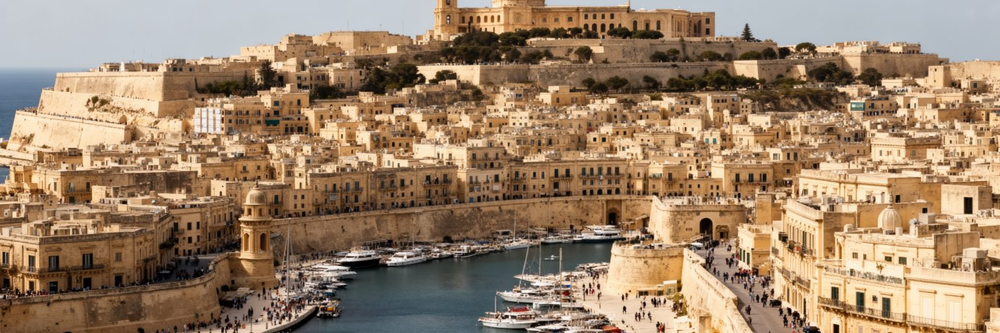
ヴァレッタを読む面白さは、都市の小ささと意味の大きさが常にずれていることにあります。市域人口は少なく、徒歩で主要な場所を回れるほど凝縮していますが、その中には聖ヨハネ騎士団の軍事宗教都市、英領期の軍港、独立国家の首都、EU加盟国の行政、地中海の移民と海上安全、観光と文化財保存、住民減少と住宅問題が重なります。城壁から港を見ると、美しい眺望の背後に、船、軍事、物流、クルーズ、環境負荷が見えます。聖堂に入ると、信仰と権力と芸術が同じ空間を作ってきたことが分かります。夜の路地を歩くと、昼間の観光地とは違う静けさと、住む人の少なさが現れます。ヴァレッタは大都市のように拡大で世界性を示す街ではありません。むしろ、限られた石の半島に外部世界が押し寄せることで、都市の選択が鮮明に見える場所です。観光を受け入れながら住民を残せるか、文化財を守りながら現代の住まいにできるか、港の経済を活かしながら環境を守れるか、小国の政治を透明に保てるかが問われます。短い坂道、港の風、教会の鐘、バスの列、修復中のバルコニーは、どれもこの問いにつながります。ヴァレッタは、地中海の歴史を展示する街であると同時に、小さな首都が未来へ暮らしを残せるかを試す現代都市です。限られた面積の中で答えを出すため、政策の遅れも工夫もすぐ街路に現れます。